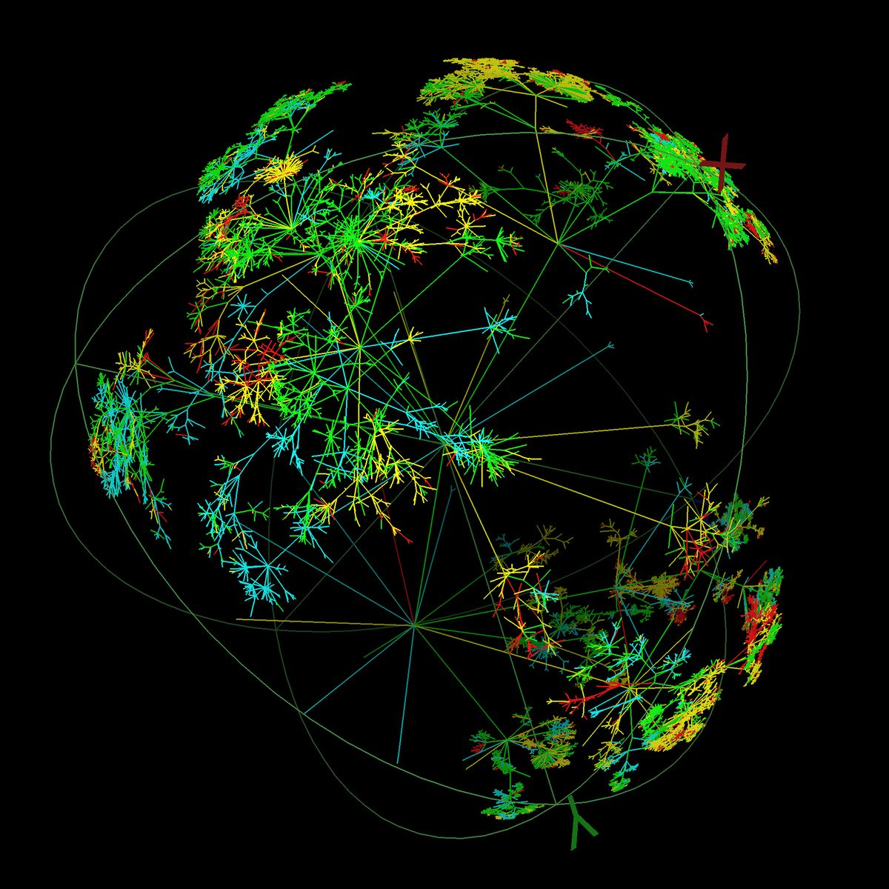

AI agents are the web's new readers.
They read data, not design.

Talk/Walk makes a small brand's sustainability claims readable, and verifiable, by machines.
Case: Ink & Spindle, a hand-printing textile studio in Melbourne.
Anything structured to read?
Can each claim be tested?
Do they resolve to a registry?
Are the figures stated?
Does the trail reach the source?
What gets discounted?
An AI agent reads this brand's real website,
the way it will in a purchase flow.
The agent can read the page. Reading is not verifying.
The words are readable. But there is no data layer to check them against.
"Sustainable" is readable as text. Half the claims are too broad to test.
Public registries exist for these. With no licence number or link on the page, the agent cannot resolve them.
Two claims carry real figures. The rest cannot be measured, so the agent discounts them.
The trail is told in prose, not held in fields. The EU Digital Product Passport will require the fields.
Unscoped terms read as known marketing language to agents, and pull credibility down.
Six checks, one shape: sparse. The trust was built for the wrong reader.
The agent can read every claim.
It can confirm almost none of them.
The same page. The same truth.
This time, structured by a designer first.
Every claim traced to its rule, its proof, and its machine-readable form. Structured by hand, by a designer.
Product · Organization · Certification.
Now there is data the agent can check.
"Sustainable" now resolves to named, scoped attributes the agent can test one by one.
Each certification is now a typed field with an issuer URI, resolvable to its public registry.
99% offcuts · 40 t CO₂ · 20 km radius.
Figures the agent can hold the brand to.
Abbotsford studio, Belgian mill, certified fibre: the full trail, held in structured fields.
Every broad word is now scoped to the attribute it describes. Nothing left to discount.
Same six checks. Same truth, new shape. The before is the dotted outline.
The truth didn't change. The design did.